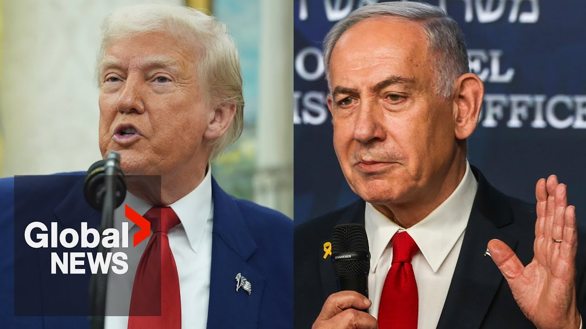

【特朗普告诉内塔尼亚胡不要对伊朗采取行动，因为美国“非常接近达成解决方案”】
Summary: Trump admitted warning Netanyahu against disrupting Iran talks, aiming for a strong deal with inspections to avoid violence, while also addressing Gaza's situation.
摘要： 特朗普承认警告内塔尼亚胡不要破坏伊朗谈判，旨在达成有严格检查的协议以避免暴力，同时谈及加沙局势。

⏱️ Estimated Reading Time: 4 min
Did you warn uh Prime Minister Netanyahu against taking some sort of actions that could disrupt the talks there in a phone call last week?
您上周在电话中是否警告内塔尼亚胡总理不要采取可能破坏谈判的行动？
Well, I'd like to be honest.
好吧，我想坦诚相告。
Yes, I did.
是的，我警告了。
Next question, please.
请下一个问题。
Mr. President, just ask sanctions.
总统先生，只是问问制裁的事。
I did.
我做了。
If Senate Republicans want to push It's not a warning.
如果参议院共和党人想推动，这不是警告。
I said I don't think it's appropriate.
我说我认为这不合适。
What?
什么？
What exactly did you tell?
您具体说了什么？
Did you I just said I don't think it's appropriate.
您是否……我只是说我认为这不合适。
We're talk We're having very good discussions with him and I said I don't think it's appropriate right now.
我们在谈……我们与他进行了很好的讨论，我说我认为现在不合适。
Because if we can settle it with a very strong document, very strong with inspections and no trust.
因为如果我们能用一份非常强有力的文件解决，有严格的检查且无需信任。
I don't trust anybody.
我不信任任何人。
I don't trust anybody.
我不信任任何人。
So no trust.
所以没有信任。
I want it very strong where we can go in with inspectors.
我希望非常严格，我们可以派检查员进去。
We can take whatever we want.
我们可以拿走任何我们想要的东西。
We can blow up whatever we want, but nobody getting killed.
我们可以炸毁任何东西，但不会有人丧生。
We can blow up a lab, but nobody's going to be in the lab as opposed to everybody being in the lab and blowing it up, right?
我们可以炸毁一个实验室，但里面不会有人，而不是所有人都在实验室里然后炸毁它，对吧？
Two ways of doing it.
两种做法。
Um, yeah.
嗯，是的。
I told him this would be inappropriate to do right now because we're very close to a solution.
我告诉他现在这样做不合适，因为我们非常接近达成解决方案。
Now that could change at any moment.
现在情况随时可能改变。
Could change with a phone call, but right now I think they want to make a deal and uh if we can make a deal, save a lot of lives.
可能一个电话就改变，但现在我认为他们想达成协议，如果我们能达成协议，可以挽救很多生命。
No, we're dealing with the whole situation in Gaza.
不，我们正在处理加沙的整体局势。
We're getting food to the people of Gaza.
我们正在向加沙人民提供食物。
It's been a very nasty situation, very nasty fight.
这是一个非常糟糕的局面，非常恶劣的战斗。
October 7th was a very nasty day, the worst that I think I've ever seen.
10月7日是非常糟糕的一天，我认为是我见过最糟糕的。
Uh it was a horrible day and people aren't going to forget that either.
那是一个可怕的日子，人们也不会忘记。
So we'll see how that all works out.
所以我们看看事情如何发展。
We're doing very well with Iran.
我们在伊朗问题上做得很好。
I think we're doing very well with Gaza, but we are doing very well with Iran.
我认为我们在加沙问题上做得很好，但我们在伊朗问题上也做得很好。
And I think we're going to see some some uh something very sensible because there are only two outcomes.
我认为我们会看到一些非常合理的结果，因为只有两种结局。
You know what the two outcomes?
你知道哪两种结局吗？
There's a a smart outcome and there's a violent outcome.
一种是聪明的结局，一种是暴力的结局。
And and I don't think anybody wants to see the second.
我认为没人想看到第二种。
But I think we're uh we've made a lot of progress and we'll see.
但我认为我们已经取得了很多进展，我们拭目以待。
You know, they still have to uh agree to the final stages of a document, but I think you could be very well surprised what happens there and it'll be a great thing for them and they could have a great country into the future.
你知道，他们仍需同意文件的最后阶段，但我认为结果可能会让你非常惊讶，这对他们来说是件好事，他们未来可能成为一个伟大的国家。